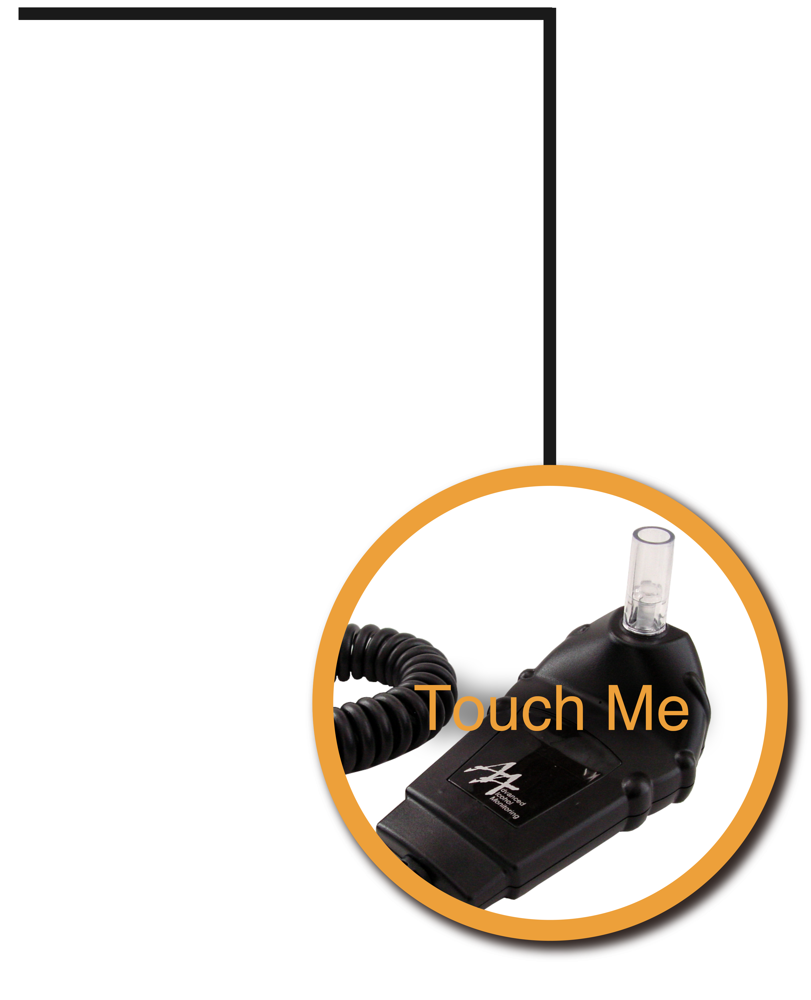

<!DOCTYPE html>
<html lang="en">

<head>
    <meta charset="UTF-8">
    <meta name="viewport" content="width=device-width, initial-scale=1.0">
    <meta http-equiv="X-UA-Compatible" content="ie=edge">
    <title>酒駕專題</title>
    <!-- font_awesome -->
    <link rel="stylesheet" href="https://use.fontawesome.com/releases/v5.8.1/css/all.css"
        integrity="sha384-50oBUHEmvpQ+1lW4y57PTFmhCaXp0ML5d60M1M7uH2+nqUivzIebhndOJK28anvf" crossorigin="anonymous">
    <!-- reset_css -->
    <link rel="stylesheet" href="css/normalize.css">
    <!-- fancybox_css(media play) -->
    <link rel="stylesheet" href="css/jquery.fancybox.css">
    <!-- aos_css -->
    <link href="https://unpkg.com/aos@2.3.1/dist/aos.css" rel="stylesheet">
    <!-- my_css -->
    <link rel="stylesheet" href="css/style.css">
</head>

<body>
    <main id="fullpage">
        <!-- 前言  -->
        <section id="section1" class="section">
            <h1><span style="font-size: 2em ">醉</span>該萬死</h1>
            <p>
                幾乎每天在媒體上，都可以看到酒駕事故發生，甚至因此奪走無辜生命，引發社會公憤。
            </p>
            <p>
                然而大家都知道酒駕危險性，相關刑責也不斷加重，為什麼每年取締酒駕案件還是超過10萬件？
            </p>
        </section>
        <!-- 人物訪談  -->
        <section id="section2" class="wire_layout section">
            <h2>人物訪談</h2>
            <div class="inner_layout">
                <div data-aos="fade-up" class="flex_layout">
                    <div class="ask_block">
                        <a id="ask1" class="various fancybox.iframe" href="#">
                            <div id="ask1_hover">
                                <div class="ask_content">
                                    <h3>陳敏香</h3>
                                    <h4>酒駕受害者曾御慈母親
                                        <br>酒駕防制社會關懷協會理事長</h4>
                                    <p>曾御慈30歲就當上主治醫師，過去她除了在台大醫院照顧病況最嚴重的病人，也投入愛滋病研究，是病患眼中親切的好醫師。但2013年5月28日晚上，肇事者詹姓駕駛當晚被員警發現疑似酒駕後，竟拒檢還闖紅燈加速逃逸，才會撞上過馬路的曾御慈，讓她失去了生命。
                                    </p>
                                </div>
                            </div>
                        </a>
                    </div>
                    <div class="ask_block">
                        <a id="ask2" class="various fancybox.iframe" href="#">
                            <div id="ask2_hover">
                                <div class="ask_content">
                                    <h3>林毓英</h3>
                                    <h4>酒駕受害者詹庭豪母親</h4>
                                    <p>2011年夏天，當時年僅28歲的詹庭豪，剛通過碩士論文口試，他高興地向媽媽報告這個好消息，7月31日晚間，他外出買晚餐，
                                        正在騎樓等待時，卻遭喝醉的曾姓駕駛撞飛，將美好前途撞碎，庭豪嚴重顱內出血，被宣判為植物人。</p>
                                </div>
                            </div>
                        </a>
                        <a id="ask3" class="various fancybox.iframe" href="#">
                            <div id="ask3_hover">
                                <div class="ask_content">
                                    <h3>陳昭宏</h3>
                                    <h4>酒駕受害者 新北市員警</h4>
                                    <p>2016年在新北市蘆洲分局擔任員警的陳昭宏，於國道執勤時，遭到酒駕的陳姓駕駛撞上，造成雙腿粉碎性骨折，在醫師的積極搶救下，保住了性命，卻永遠失去了右腳。</p>
                                </div>
                            </div>
                        </a>
                    </div>
                </div>
            </div>
        </section>
        <!-- 數據-酒駕取締下降緩慢 -->
        <section id="section3" class="wire_layout section">
            <h2>酒駕取締下降緩慢</h2>
            <div class="inner_layout">
                <p>雖然2011年修法後，酒駕取締數已逐漸減少，但速度緩慢，至2018年僅下降10.7%</p>
                <figure></figure>
                <p>（資料來源：內政部警政署） 單位：件</p>
            </div>
        </section>
        <!-- 數據-酒駕死傷人數 -->
        <section id="section4" class="wire_layout section">
            <h2>酒駕死傷人數</h2>
            <div class="inner_layout">
                <p>政府近年來多次對《刑法》中酒駕的規範與罰則進行修法，<br>隨著規定越來越嚴格，酒駕死傷人數也逐年下降。</p>
                <div class="flex_layout">
                    <div class="two-three">
                        <figure data-aos="zoom-in"></figure>
                    </div>
                    <div class="one-three chart_layout">
                        <figure data-aos="zoom-in"></figure>
                        <figure data-aos="zoom-in" data-aos-delay="500"></figure>
                    </div>
                </div>
                <p>酒駕事故中死亡的人數，從2011年的<span class="hightlight">439人</span>，到2018年時只剩<span
                        class="hightlight">100人</span>。<br>
                    另外受傷人數，也由2011年的<span class="hightlight">14,281人</span>，減少到至2018年的<span
                        class="hightlight">5,595人</span>。</p>
                <p>（資料來源：警政署）</p>
            </div>
        </section>
        <!-- 數據-移送法辦人次增高 -->
        <section id="section5" class="wire_layout section">
            <h2>移送法辦人次增高</h2>
            <div class="inner_layout">
                <div class="flex_layout">
                    <div class="two-three">
                        <p>2013年修法後，酒駕取締標準更嚴格，酒精濃度呼氣0.55毫克下降到了0.25毫克，但移送法辦人次相較於2011年不減反增。</p>
                    </div>
                    <div class="one-three">
                        <figure data-aos="zoom-in-up" data-aos-delay="1000">
                            
                        </figure>
                    </div>
                </div>
                <figure data-aos="zoom-in">
                    
                </figure>
            </div>
        </section>
        <!-- 數據-酒駕累犯日益嚴重 -->
        <section id="section6" class="wire_layout section">
            <h2>酒駕累犯日益嚴重</h2>
            <div class="inner_layout">
                <p>雖然整體幾酒駕案件和傷亡人數都下降了，但酒駕再犯率卻再上升</p>
                <figure data-aos="zoom-in">
                    
                </figure>
                <div class="flex_layout">
                    <div class="two-three">
                        <p>與2011年相比，近年來酒駕累犯者人數成長約</p>
                    </div>
                    <div class="one-three">
                        <figure data-aos="zoom-in-up" data-aos-delay="1000">
                            
                        </figure>
                    </div>
                </div>
            </div>
        </section>
        <!-- 問問題 -->
        <section id="section7" class="wire_layout section">
            <div class="flex_layout">
                <div class="two-three">
                    <h2>啤酒倒倒看</h2>
                    <p>一個體重60公斤的人，喝了多少 5% 的啤酒，呼氣所含酒精濃度會達 0.25 mg/L？</p>
                    <button id="result" class="btn_result">查看答案</button>
                    <figure class="pour">
                        
                        
                    </figure>
                </div>
                <div class="one-three">
                    <div class="drunker">
                        
                    </div>
                </div>
            </div>
            <div id="info_answer">
                <p>根據警察大學教授蔡中志研究，呼氣酒精濃度達到0.25mg/L的飲酒量，為「體重 X 0.8=飲酒毫升數 X 酒精濃度」</p>
                <figure style="width: 70%; margin:auto">
                    
                </figure>
                <p>因此一個體重60公斤的人，大約喝了960毫升的啤酒，就會達到構成公共危險罪的標準</p>
                <a title="Close" class="fancybox-item fancybox-close" href="javascript:;"></a>
            </div>
        </section>
        <!-- 問問題 但是-->
        <section id="section8" class="wire_layout section">
            <div class="inner_layout">
                <div class="flex_layout">
                    <div class=" two-three">
                        <h2 data-aos="fade-right" data-aos-offset="300" data-aos-easing="ease-in-sine"
                            data-aos-duration="1000" style="text-align: left; padding-left:3%;font-size: 2.1em;">
                            但是...</h2>
                        <p style="text-align: left; color: white;">
                            這個公式僅供參考，酒精濃度還和性別、年齡、飲酒速度、是否空腹、服用藥物等多種因素相關。<br>而根據醫學研究，喝酒之後會產生：
                        </p>
                        <div class="flex_layout_noblock">
                            <div class="area">
                                <div data-aos="fade-up" data-aos-duration="2000" data-aos-delay="1000"
                                    class="psman area1">
                                    <p>因為精神狀況欠佳產生「飛蛾效應」的趨光性行為</p>
                                </div>
                                <div data-aos="fade-up" data-aos-duration="2000" data-aos-delay="1200"
                                    class="psman area2">
                                    <p>運動反射神經遲鈍遇到突發狀況無法反應</p>
                                </div>
                            </div>
                            <figure class="one-three">
                                
                            </figure>
                            <div class="area" data-aos="fade-up" data-aos-duration="2000" data-aos-delay="1100">
                                <div class="psman area3">
                                    <p>恐怕造成視野縮減，無法看清週遭事物，增加危險性</p>
                                </div>
                            </div>
                        </div>
                        <p style="text-align: left;color: white;">
                            因此法律標準只是平均值，每位駕駛都應該有<span style="font-size: 1.4em;color: #f90101;" data-aos="zoom-in"
                                data-aos-duration="5000">「喝了酒就不該駕駛上路」</span>的認知。<br>
                            根據台北市警察局統計，2018年晨間飲酒取締件數比之前增加25%，原因出在許多人疏忽隔天酒意未退。
                        </p>
                    </div>
                </div>
            </div>
        </section>
        <!-- 圖表-隔夜醉也是酒駕 -->
        <section id="section9" class="wire_layout section">
            <h2>隔夜醉也是酒駕！</h2>
            <div class="inner_layout">
                <p>根據台北市警察局統計，早上6點到中午12點間的酒駕取締件數有逐年攀升趨勢，原因出在許多人疏忽隔天酒意未退。</p>
                <figure data-aos="zoom-in">
                    
                </figure>
                <div class="flex_layout">
                    <div class="color2"> 6-12點的酒駕取締件數</div>
                    <div class="color1"> 年度台北市酒駕取締件數</div>
                </div>
                <p>單位：件</p>
            </div>
        </section>
        <!-- 休息多久 -->
        <section id="section10" class="wire_layout section">
            <h2>想想看</h2>
            <div class="inner_layout">
                <p>喝完酒，最少需要休息幾個小時，才能讓體內酒精代謝完畢？</p>
                <div class="flex_layout">
                    <div class="clock_layout1">
                        <div id="clock">
                            <figure class="sleeper">
                                <sub>zZ..</sub>
                                <sup>zZz..</sup>
                                
                            </figure>
                            <ul class="clock-digits">
                                <li>12</li>
                                <li>3</li>
                                <li>6</li>
                                <li>9</li>
                            </ul>
                            <div class="arrow hours"></div>
                            <div class="arrow minutes"></div>
                            <div class="arrow seconds"></div>
                        </div>
                    </div>
                    <div class="clock_layout2">
                        <form style="margin:auto;">
                            <label><input type="radio" name="time" value="3" checked onClick="restTime('太少了吧@@')"><span
                                    class="clockstyle"> 3
                                </span>小時<br></label>
                            <label><input type="radio" name="time" value="6" onClick="restTime('需要更多休息吧 QQ')"><span
                                    class="clockstyle"> 6
                                </span>小時<br></label>
                            <label><input type="radio" name="time" value="9" onClick="restTime('再多一點比較保險吧?')"><span
                                    class="clockstyle"> 9
                                </span>小時<br></label>
                            <label><input type="radio" name="time" value="12" onClick="restTime('沒錯！')"><span
                                    class="clockstyle"> 12
                                </span>小時<br></label>
                        </form>
                    </div>
                </div>
                <button id="result1" class="btn_result">查看答案</button>
            </div>
            <div id="info_answer1">
                <p id="ans_sug">太少了吧@@</p>
                <p>醫師建議，酒精濃度30%以下<br>
                    要休息12小時以上<br>
                    超過30%更需要休息24小時以上<br>
                    才能讓酒精在體內完全代謝
                </p>
                <a title="Close" class="fancybox-item fancybox-close" href="javascript:;"></a>
            </div>
        </section>
        <!-- 法律-道路交通條例修正 -->
        <section id="section11" class="wire_layout section">
            <h2>道路交通條例修正</h2>
            <div class="inner_layout">
                <div class="roadlaw">
                    <figure>
                        
                    </figure>
                    <div class="roadlaw_content">
                        <div class="color_block">
                            <span class="color_b1"></span>
                            <span class="color_b2"></span>
                            <span class="color_b3"></span>
                            <span class="color_b4"></span>
                            <span class="color_b5"></span>
                        </div>
                        <p>為宣導酒後不開車，並達到「酒駕零容忍」的目標<br>立法院在今年初三讀通過《道路交通管理處罰條例》修正案</p>
                    </div>
                </div>
            </div>
        </section>
        <!-- 法律-提高酒駕違規罰鍰 -->
        <section id="section12" class="wire_layout section">
            <h2>提高酒駕違規罰鍰</h2>
            <div class="inner_layout">
                <div class="flex_layout">
                    <div class=" two-three">
                        <p>駕駛臨檢酒測值超過0.15、未達0.25毫克</p>
                        <figure data-aos="zoom-in" data-aos-duration="2000" class="list_img">
                            
                        </figure>
                        <p>預計7月1日上路</p>
                    </div>
                </div>
            </div>
        </section>
        <!-- 法律-同車共責 -->
        <section id="section13" class="wire_layout section">
            <h2>同車共責</h2>
            <div class="inner_layout">
                <div class="flex_layout">
                    <div class=" two-three">
                        <p style="margin-bottom: 10px;">此次修法新增「同車共責」部分，是仿效日本制度但年滿70歲、心智障礙或汽車運輸業的乘客，不在此限</p>
                        <p class="mbblcok">未來汽機車駕駛人經酒測後所含酒精濃度達每公升0.25毫克</p>
                        <p></p>
                        <div class="flex_layout fullscreen">
                            <div data-aos="flip-up" data-aos-duration="2000" data-aos-delay="1000"
                                class="car_text carps">
                                年滿18歲的同車乘客將處<br>
                                600元～3000元罰鍰
                            </div>
                            <div class="car_img">
                                <figure style="margin: 30px auto 0;">
                                    
                                </figure>
                            </div>
                            <div data-aos="flip-up" data-aos-duration="2000" data-aos-delay="1500"
                                class="car_text pcblock">
                                未來汽機車駕駛人經酒測後<br>
                                所含酒精濃度達每公升0.25毫克
                            </div>
                        </div>
                        <figure class="date">
                            
                        </figure>
                        <p class="pcblock_m" style="margin-top:100px; color: white;">
                            這種處罰方式，是為了落實「預防酒駕人人有責」的精神，在酒醉者抱持僥倖心態上路前，透過同儕監督加以防範。</p>
                        <div class=" flex_layout mobilescreen">
                            <div data-aos="zoom-in-up" data-aos-duration="2000" data-aos-delay="1000"
                                class="car_text_m carps_m">
                                年滿18歲的同車乘客將處<br>
                                600元～3000元罰鍰
                            </div>
                            <div class="car_img_m">
                                <figure style="margin: auto">
                                    
                                </figure>
                            </div>
                            <div class="car_text_m pcblock_m">
                                未來汽機車駕駛人經酒測後<br>
                                所含酒精濃度達每公升0.25毫克
                            </div>
                            <p>這種處罰方式，是為了落實「預防酒駕人人有責」的精神，在酒醉者抱持僥倖心態上路前，透過同儕監督加以防範。</p>
                        </div>
                    </div>
                </div>
            </div>
        </section>
        <!-- 法律-同車共責 -->
        <section id="section14" class="wire_layout section">
            <div class="inner_layout">
                <div class="flex_layout">
                    <div class="two-three">
                        <p style="color: white;">飲酒運転は極めて悪質・危険な犯罪です。<br>（酒駕是邪惡、危險的犯罪）</p>
                        <p style="color: white;">日本在20多年前，每年有上千件酒駕致死案件，但在1999年時發生一起卡車司機酒駕追撞，造成2名幼童罹難的悲劇，促使日本政府祭出重罰。</p>
                        <div class="chart" data-aos="zoom-in">
                            <ul class="chart_ul">
                                <li>0</li>
                                <li>200</li>
                                <li>400</li>
                                <li>600</li>
                                <li>800</li>
                                <li>1000</li>
                                <li>1200</li>
                                <li>1400</li>
                            </ul>
                            <div class="year_bar">
                                <div class="year">
                                    <div>1996</div>
                                    <div id="y1996">
                                        <div class="year_area"><span class="case">1296</span></div>
                                    </div>
                                </div>
                                <div class="year">
                                    <div>1997</div>
                                    <div id="y1997">
                                        <div class="year_area"><span class="case">1240</span></div>
                                    </div>
                                </div>
                                <div class="year">
                                    <div>1998</div>
                                    <div id="y1998">
                                        <div class="year_area"><span class="case">1268</span></div>
                                    </div>
                                </div>
                                <div class="year">
                                    <div>1999</div>
                                    <div id="y1999">
                                        <div class="year_area"><span class="case">1257</span></div>
                                        <figure class="truck">
                                            
                                        </figure>
                                    </div>
                                </div>
                                <div class="year">
                                    <div>2000</div>
                                    <div id="y2000">
                                        <div class="year_area"><span class="case">1276 （幼童罹難悲劇）</span></div>
                                    </div>
                                </div>
                                <div class="year">
                                    <div>2001</div>
                                    <div id="y2001">
                                        <div class="year_area"><span class="case">1191</span></div>
                                    </div>
                                </div>
                                <div class="year">
                                    <div>2002</div>
                                    <div id="y2002">
                                        <div class="year_area"><span class="case">1000</span></div>
                                    </div>
                                </div>
                                <div class="year">
                                    <div>2003</div>
                                    <div id="y2003">
                                        <div class="year_area"><span class="case">781</span></div>
                                    </div>
                                </div>
                                <div class="year">
                                    <div>2004</div>
                                    <div id="y2004">
                                        <div class="year_area"><span class="case">713</span></div>
                                    </div>
                                </div>
                                <div class="year">
                                    <div>2005</div>
                                    <div id="y2005">
                                        <div class="year_area"><span class="case">709</span></div>
                                    </div>
                                </div>
                                <div class="year">
                                    <div>2006</div>
                                    <div id="y2006">
                                        <div class="year_area"><span class="case">612</span></div>
                                    </div>
                                </div>
                                <div class="year">
                                    <div>2007</div>
                                    <div id="y2007">
                                        <div class="year_area"><span class="case">434</span></div>
                                    </div>
                                </div>
                                <div class="year">
                                    <div>2008</div>
                                    <div id="y2008">
                                        <div class="year_area"><span class="case">305</span></div>
                                    </div>
                                </div>
                                <div class="year">
                                    <div>2009</div>
                                    <div id="y2009">
                                        <div class="year_area"><span class="case">292</span></div>
                                    </div>
                                </div>
                                <div class="year">
                                    <div>2010</div>
                                    <div id="y2010">
                                        <div class="year_area"><span class="case">295</span></div>
                                    </div>
                                </div>
                                <div class="year">
                                    <div>2011</div>
                                    <div id="y2011">
                                        <div class="year_area"><span class="case">270</span></div>
                                    </div>
                                </div>
                                <div class="year">
                                    <div>2012</div>
                                    <div id="y2012">
                                        <div class="year_area"><span class="case">258</span></div>
                                    </div>
                                </div>
                                <div class="year">
                                    <div>2013</div>
                                    <div id="y2013">
                                        <div class="year_area"><span class="case">238</span></div>
                                    </div>
                                </div>
                                <div class="year">
                                    <div>2014</div>
                                    <div id="y2014">
                                        <div class="year_area"><span class="case">227</span></div>
                                    </div>
                                </div>
                                <div class="year">
                                    <div>2015</div>
                                    <div id="y2015">
                                        <div class="year_area"><span class="case">201</span></div>
                                    </div>
                                </div>
                                <div class="year">
                                    <div>2016</div>
                                    <div id="y2016">
                                        <div class="year_area"><span class="case">213</span></div>
                                    </div>
                                </div>
                                <div class="year_case">
                                    <h3><span>實施酒駕連坐法</span></h3>
                                    <h4>車輛提供者、酒類提供者、同車乘客納入刑責範圍</h4>
                                    <p>制度實施後致死案件顯著減少，2016年比1996年致死案件下降84%</p>
                                </div>
                            </div>
                            <p>台灣方面預計7/1上路，目前僅對於同車乘客提出處罰，商家則沒有規範在內</p>
                            <p>（資料來源：日本警察廳）<br>(日本致死案件數）</p>
                        </div>
                    </div>
                </div>
            </div>
        </section>
        <!-- 法律-同車共責 -->
        <section id="section15" class="wire_layout section">
            <div class="inner_layout">
                <div class="flex_layout">
                    <div class=" two-three">
                        <p>
                            這種處罰方式，是為了落實「預防酒駕人人有責」的精神，在酒醉者抱持僥倖心態上路前，透過同儕監督加以防範，制度實施後，日本酒駕致死案件也因此顯著減少。而在台灣方面，目前僅對於同車乘客提出處罰，商家則沒有規範在內。<br>（資料來源：日本警察廳）
                        </p>
                    </div>
                </div>
            </div>
        </section>
        <!-- 法律-酒精鎖 -->
        <section id="section16" class="wire_layout section">
            <h2>酒精鎖</h2>
            <div class="inner_layout">
                <div class="flex_layout">
                    <div class=" two-three">
                        <p>近年來，朝野立委多次討論卻遲無共識的「酒精鎖」政策，這次修法也納入其中，未來汽車駕駛人「因酒駕遭到吊銷執照，要重新考領駕照時」必須強制加裝酒精鎖，如果違反規定可處6000元以上、1萬2000元以下罰鍰。
                        </p>
                    </div>
                </div>
            </div>
        </section>
        <!-- 法律-酒精鎖 -->
        <section id="section17" class="wire_layout section">
            <div class="inner_layout">
                <div class="flex_layout">
                    <div class=" two-three">
                        <figure class="dashboard">
                            
                            
                        </figure>
                    </div>
                </div>
            </div>
        </section>
        <!-- 法律-酒精鎖 -->
        <section id="section18" class="wire_layout section">
            <h2>什麼是酒精鎖</h2>
            <div class="inner_layout">
                <div class="flex_layout">
                    <div class="one-three">
                        <figure class="drivecar">
                            
                            
                        </figure>
                    </div>
                    <div class="step two-three">
                        <div class="step_area" data-aos="zoom-in">
                            <div class="step_num">
                                <p>Step 1</p>
                            </div>
                            <div class="step_text">
                                <p>駕駛必須在啟動汽車引擎前，先對著酒精鎖呼氣測試。</p>
                            </div>
                            <div class="step_line" data-aos="zoom-in" data-aos-delay="500">
                                <div class="dot1"></div>
                                <div class="dotline"></div>
                                <div class="dot2">
                                    <div class="dot"></div>
                                </div>
                            </div>
                        </div>
                        <div class="step_area" data-aos="zoom-in">
                            <div class="step_num">
                                <p>Step 2</p>
                            </div>
                            <div class="step_text">
                                <p>酒測值必須符合安全標準，才允許發動汽車。</p>
                            </div>
                            <div class="step_line" data-aos="zoom-in" data-aos-delay="500">
                                <div class="dot1">
                                    <div class="dot"></div>
                                </div>
                                <div class="dotline"></div>
                                <div class="dot2">
                                    <div class="dot"></div>
                                </div>
                            </div>
                        </div>
                        <div class="step_area" data-aos="zoom-in">
                            <div class="step_num">
                                <p>Step 3</p>
                            </div>
                            <div class="step_text">
                                <p>為了防止有心人士鑽漏洞，即使引擎發動之後，酒精鎖還是會不定時要求駕駛重新酒測。</p>
                            </div>
                            <div class="step_line" data-aos="zoom-in" data-aos-delay="800">
                                <div class="dot1">
                                    <div class="dot"></div>
                                </div>
                                <div class="dotline"></div>
                                <div class="dot2"></div>
                            </div>
                        </div>
                        <div class="step_area" data-aos="zoom-in">
                            <div class="step_num">
                                <p>Step 4</p>
                            </div>
                            <div class="step_text">
                                <p>如果拒絕受測或酒測值超標，就會啟動警報器。</p>
                            </div>
                        </div>
                    </div>
                </div>
            </div>
        </section>
        <!-- 法律-酒精鎖地圖 -->
        <section id="section19" class="wire_layout section">
            <div class="inner_layout">
                <p>酒精鎖在多個國家普遍使用，包括美國 50 州及歐盟部分國家，除了針對酒駕犯設有相關措施，也要求部份職業駕駛強制裝設酒精鎖</p>
                <div class="flex_layout situation">
                    <button id="set1">自願加裝</button>
                    <button id="set2">法案準備中</button>
                    <button id="set3">法案已通過</button>
                </div>
                <figure id="lockMap">
                    
                </figure>
            </div>
        </section>
        <!-- 法律-翻牌 -->
        <section id="section20" class="wire_layout section">
            <div class="inner_layout">
                <h2>酒精鎖還有哪些疑慮？</h2>
                <div class="flex_layout card_flex">
                    <div class="card" id="card1">
                        <div class="card_bg">
                            <figure class="card_cont back">
                                <h3>酒精鎖價格高昂？</h3>
                                
                                <figcaption>根據不同規格，市面上酒精鎖
                                    價格不一，先前交通部提出
                                    初步報價，更高達15萬-20萬元
                                    引發成本過高疑慮
                                    該採取何種功能、配置車種等
                                    尚待交通部研議。</figcaption>
                            </figure>
                            <figure class="card_cont front">
                                
                                <figcaption>酒精鎖價格高昂？</figcaption>
                                <small>Click!</small>
                            </figure>
                        </div>
                    </div>
                    <div class="card" id="card2">
                        <div class="card_bg">
                            <figure class="card_cont back">
                                <h3>酒駕累犯開別台車？</h3>
                                
                                <figcaption>交通部表示酒精鎖處罰
                                    「對人不對車」，因此需裝置
                                    配備的酒駕累犯，駕照上都會
                                    註記，方便警方臨檢時辨識。
                                </figcaption>
                            </figure>
                            <figure class="card_cont front">
                                
                                <figcaption>酒駕累犯開別人車？</figcaption>
                                <small>Click!</small>
                            </figure>
                        </div>
                    </div>
                </div>
            </div>
        </section>
        <!-- 結論 -->
        <section id="section_end" class="wire_layout section">
            <h2>結論</h2>
            <div class="inner_layout">

            </div>
        </section>
    </main>
    <div class="mouse">
        <div class="scroll"></div>
    </div>
    <!-- jqCDN -->
    <script src="https://ajax.googleapis.com/ajax/libs/jquery/3.4.0/jquery.min.js"></script>
    <!-- fancybox_js -->
    <script src="js/jquery.fancybox.pack.js"></script>
    <script src="js/jquery.fancybox-media.js"></script>
    <!-- clock_js -->
    <script src="js/clock.js"></script>
    <!-- aos_js -->
    <script src="https://unpkg.com/aos@2.3.1/dist/aos.js"></script>
    <script>
        AOS.init();
    </script>
    <!-- my_js -->
    <script src="js/script.js"></script>

</body>

</html>
